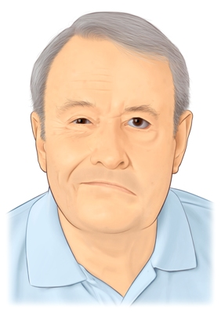

Paralisia total de todos, ou alguns, músculos da expressão facial.
Tudo sobre Paralisia Facial
A Paralisia Facial é um distúrbio (parésia) ou uma paralisia total de todos, ou alguns, músculos da expressão facial.
A paralisia Facial pode ser classificada como:
Central;
Periférica;
No caso aprentado na imagem podemos ver uma assimetria causada pela paralisia dos nervos faciais, com incapacidade de fechar o olho e mover o lábio do lado afectado. Trata-se de uma paralisia do tipo periférica.
A instalação dos sintomas desta patologia é repentina, geralmente nocturna e precedida de dores a nível da região Cervical.
Alguns dos sintomas iniciais, e mais frequentes da Paralisia Facial incluem a sensação de dormência ou fraqueza, sensação de pressão ou edema da hemiface afectada, alterações no paladar ou, até mesmo, abolição deste em certas regiões internas da Cavidade Bocal; intolerância a barulhos, olho ressecado e/ou com dores em torno do mesmo, assim como no ouvido do lado afectado.
Aqui irá descobrir mais sobre a anatomia da face: